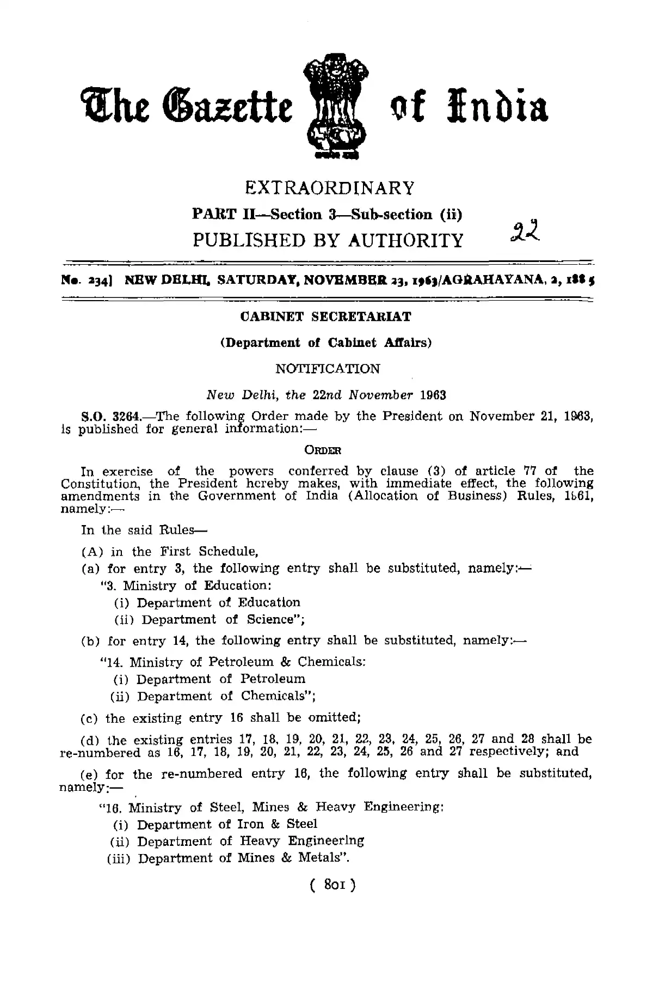
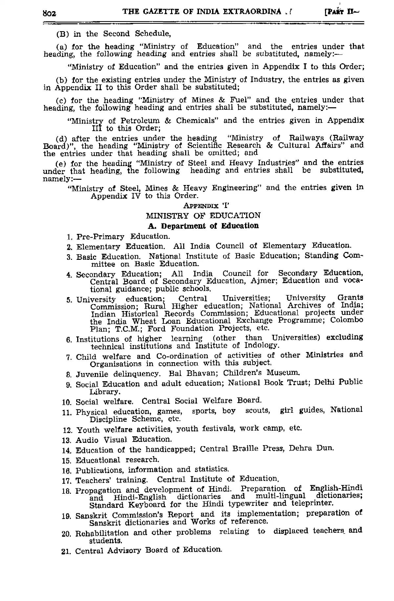
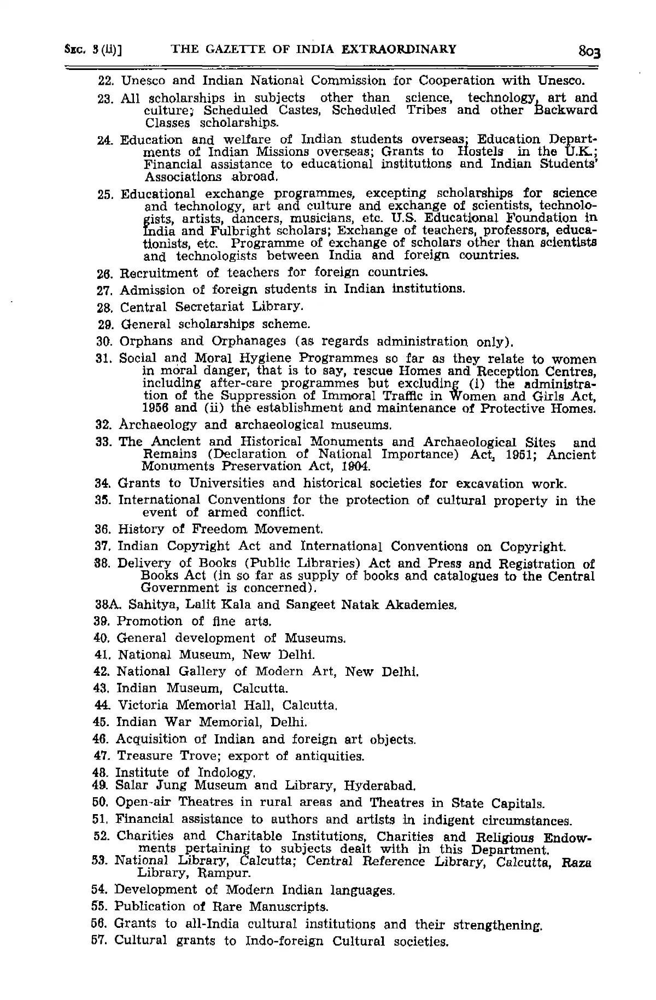
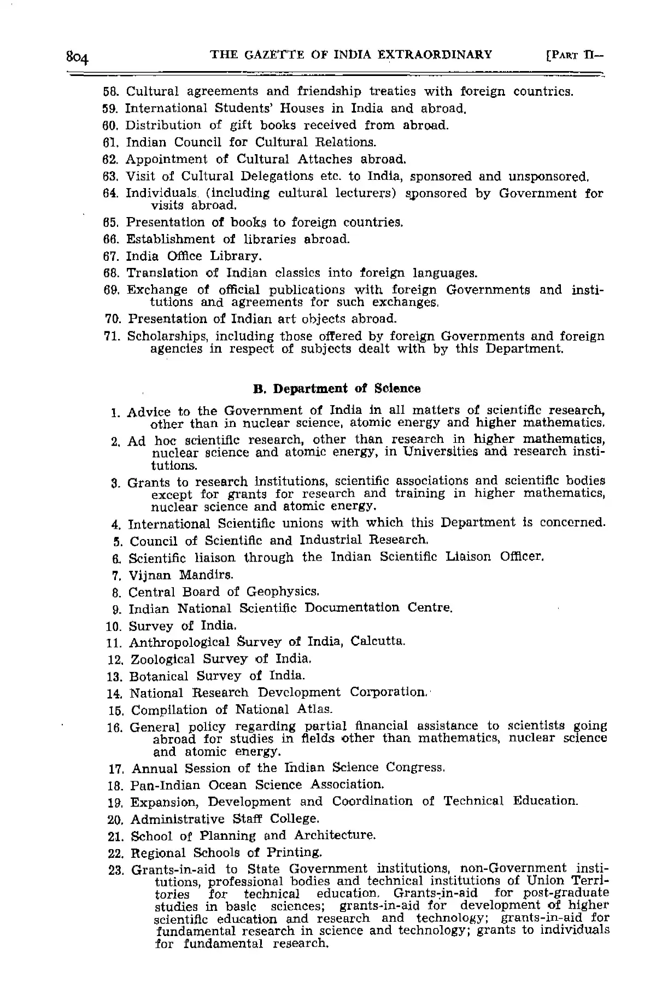
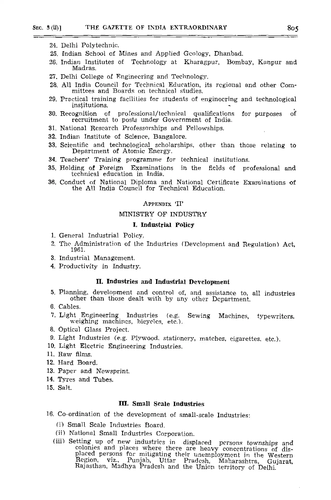
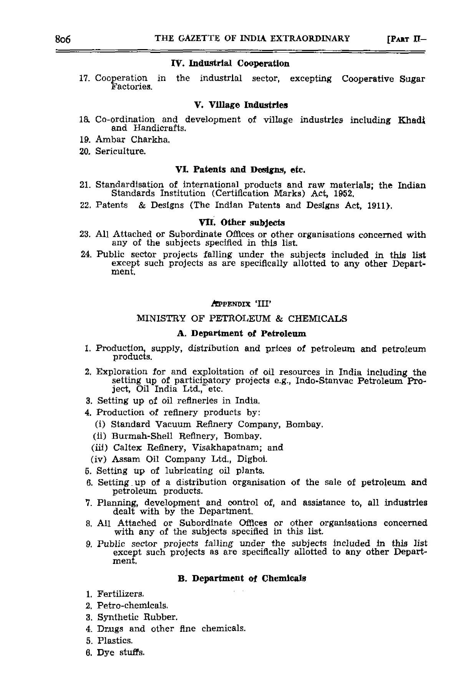
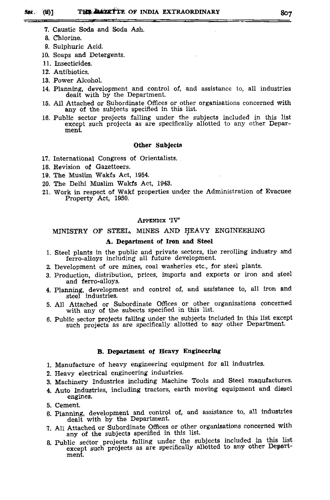
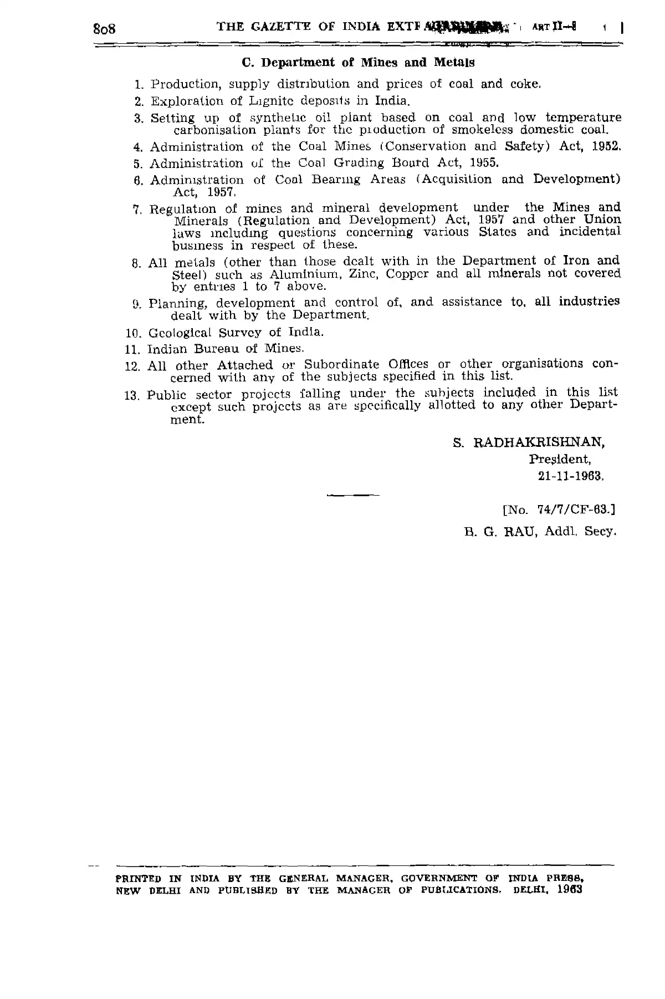

Amendment #22 (S.O. 3264, 1963)
21 changes: 16 to the First Schedule, 5 to the Second Schedule. 21 applied
What it did to the ministries
- endedMinistry of Mines & Fuel is abolished change 2, 19 · histories: Mines & Fuel
- bornMinistry of Petroleum & Chemicals is created (30 subjects) change 2, 19 · histories: Petroleum & Chemicals
- bornMinistry of Steel, Mines & Heavy Engineering is created (27 subjects) change 3, 4, 16, 21 · histories: Steel and Mines
- absorbedMinistry of Scientific Research & Cultural Affairs joins Ministry of Education (31 → 108) change 1, 3, 4, 16, 17, 20 · histories: Scientific Research & Cultural Affairs, Education and Youth Services
- absorbedMinistry of Steel & Heavy Industries joins Ministry of Steel, Mines & Heavy Engineering (5 subjects) change 3, 4, 5, 16, 21 · histories: Steel & Heavy Industries, Steel and Mines
The order, page by page
Page 1 of 8

12345678910111213141516Schedule 1 › entry 3
- 3. Ministry of Education:
- i. Department of Education
- ii. Department of Science
applied at schedule 1 › ministry 3 in the Rules after #22
read hindi missing
Schedule 1 › entry 14
- 14. Ministry of Petroleum & Chemicals:
- i. Department of Petroleum
- ii. Department of Chemicals
applied at schedule 1 › ministry 14 in the Rules after #22
read hindi missing
Schedule 1 › entry 16
applied at schedule 1 › ministry 16 in the Rules after #22
Schedule 1 › entry 16
- 16. Ministry of Steel, Mines & Heavy Engineering:
- i. Department of Iron & Steel
- ii. Department of Heavy Engineering
- iii. Department of Mines & Metals
applied at schedule 1 › ministry 16 in the Rules after #22
read hindi missing
Page 2 of 8

1718192021Schedule 2 › Ministry of Education
- APPENDIX 'I
- MINISTRY OF EDUCATION
- A. Department of Education
- 1. Pre-Primary Education.
- 2. Elementary Education. All India Council of Elementary Education.
- 3. Basic Education. National Institute of Basic Education; Standing Committee on Basic Education.
and 106 more
- 4. Secondary Education; All India Council for Secondary Education Central Board of Secondary Education, Ajmer; Education and vocational guidance; public schools.
- 5. University education; Central Universities; University Grants Commission; Rural Higher education; National Archives of India Indian Historical Records Commission; Educational projects under the India Wheat Loan Educational Exchange Programme; Colombo Plan; T.C.M.; Ford Foundation Projects, etc.
- 6. Institutions of higher learning (other than Universities) excluding technical institutions and Institute of Indology.
- 7. Child welfare and Co-ordination of activities of other Ministries and Organisations in connection with this subject.
- 8. Juvenile delinquency. Bal Bhavan; Children's Museum
- 9. Social Education and adult education; National Book Trust; Delhi Public Library.
- 10. Social welfare. Central Social Welfare Board.
- 11. Physical education, games, sports, boy scouts scouts, girl guides, National Discipline Scheme, etc.
- 12. Youth welfare activities, youth festivals, work camp, etc.
- 13. Audio Visual Education.
- 14. Education of the handicapped; Central Braille Press, Dehra Dun
- 15. Educational research.
- 16. Publications, information and statistics.
- 17. Teachers' training. Central Institute of Education
- 18. Propagation and development of Hindi. Preparation of English-Hindi and Hindi-English dictionaries and multi-lingual dictionaries Standard Keyboard for the Hindi typewriter and teleprinter.
- 19. Sanskrit Commission's Report and its implementation; preparation of Sanskrit dictionaries and Works of reference.
- 20. Rehabilitation and other problems relating to displaced teachers and students.
- 21. Central Advisory Board of Education. SEC. 3 (Li)]
- 22. Unesco and Indian National Commission for Cooperation with Unesco.
- 23. All scholarships in subjects other than science, technology, art and culture; Scheduled Castes, Scheduled Tribes and other Backward Classes scholarships.
- 24. Education and welfare of Indian students overseas; Education Departments of Indian Missions overseas; Grants to Hostels in the U.K. Financial assistance to educational institutions and Indian Students Associations abroad.
- 25. Educational exchange programmes, excepting scholarships for science and technology, art and culture and exchange of scientists, technologists, artists, dancers, musicians, etc. U.S. Educational Foundation in India and Fulbright scholars; Exchange of teachers, professors, educationists, etc.…
- 26. Recruitment of teachers for foreign countries.
- 27. Admission of foreign students in Indian institutions.
- 28. Central Secretariat Library.
- 29. General scholarships scheme.
- 30. Orphans and Orphanages (as regards administration only).
- 31. Social and Moral Hygiene Programmes so far as they relate to women in moral danger, that is to say, rescue Homes and Reception Centres including after-care programmes but excluding (1) the administration of the Suppression of Immoral Traffic in Women and Girls Act 1956 and (ii) the establishment…
- 32. Archaeology and archaeological museums.
- 33. The Ancient and Historical Monuments and Archaeological Sites and Remains (Declaration of National Importance) Act, 1951; Ancient Monuments Preservation Act, 1904.
- 34. Grants to Universities and historical societies for excavation work.
- 35. International Conventions for the protection of cultural property in the event of armed conflict.
- 36. History of Freedom Movement.
- 37. Indian Copyright Act and International Conventions on Copyright.
- 38. Delivery of Books (Public Libraries) Act and Press and Registration of Books Act (in so far as supply of books and catalogues to the Central Government is concerned).
- 38A. Sahitya, Lalit Kala and Sangeet Natak Akademies.
- 39. Promotion of fine arts.
- 40. General development of Museums.
- 41. National Museum, New Delhi.
- 42. National Gallery of Modern Art, New Delhi.
- 43. Indian Museum, Calcutta.
- 44. Victoria Memorial Hall, Calcutta.
- 45. Indian War Memorial, Delhi.
- 46. Acquisition of Indian and foreign art objects.
- 47. Treasure Trove; export of antiquities.
- 48. Institute of Indology.
- 49. Salar Jung Museum and Library, Hyderabad.
- 50. Open-air Theatres in rural areas and Theatres in State Capitals.
- 51. Financial assistance to authors and artists in indigent circumstances.
- 52. Charities and Charitable Institutions, Charities and Religious Endowments pertaining to subjects dealt with in this Department.
- 53. National Library, Calcutta; Central Reference Library, Calcutta, Raza Library, Rampur.
- 54. Development of Modern Indian languages.
- 55. Publication of Rare Manuscripts.
- 56. Grants to all-India cultural institutions and their strengthening.
- 57. Cultural grants to Indo-foreign Cultural societies.
- 58. Cultural agreements and friendship treaties with foreign countries.
- 59. International Students' Houses in India and abroad.
- 60. Distribution of gift books received from abroad.
- 61. Indian Council for Cultural Relations.
- 62. Appointment of Cultural Attaches abroad.
- 63. Visit of Cultural Delegations etc. to India, sponsored and unsponsored.
- 64. Individuals. (including cultural lecturers) sponsored by Government for visits abroad.
- 65. Presentation of books to foreign countries.
- 66. Establishment of libraries abroad.
- 67. India Office Library.
- 68. Translation of Indian classics into foreign languages.
- 69. Exchange of official publications with foreign Governments and institutions and agreements for such exchanges.
- 70. Presentation of Indian art objects abroad.
- 71. Scholarships, including those offered by foreign Governments and foreign agencies in respect of subjects dealt with by this Department.
- B. Department of Science
- 1. Advice to the Government of India in all matters of scientific research other than in nuclear science, atomic energy and higher mathematics.
- 2. Ad hoc scientific research, other than research in higher mathematics nuclear science and atomic energy, in Universities and research institutions.
- 3. Grants to research institutions, scientific associations and scientific bodies except for grants for research and training in higher mathematics nuclear science and atomic energy.
- 4. International Scientific unions with which this Department is concerned.
- 5. Council of Scientific and Industrial Research.
- 6. Scientific liaison through the Indian Scientific Liaison Officer.
- 7. Vijnan Mandirs.
- 8. Central Board of Geophysics.
- 9. Indian National Scientific Documentation Centre.
- 10. Survey of India.
- 11. Anthropological Survey of India, Calcutta.
- 12. Zoological Survey of India.
- 13. Botanical Survey of India.
- 14. National Research Development Corporation.
- 15. Compilation of National Atlas.
- 16. General policy regarding partial financial assistance to scientists going abroad for studies in flelds other than mathematics, nuclear science and atomic energy.
- 17. Annual Session of the Indian Science Congress.
- 18. Pan-Indian Ocean Science Association.
- 19. Expansion, Development and Coordination of Technical Education.
- 20. Administrative Staff College.
- 21. School of Planning and Architecture.
- 22. Regional Schools of Printing.
- 23. Grants-in-aid to State Government institutions, non-Government institutions, professional bodies and technical institutions of Union Territories for technical education. Grants-in-aid for post-graduate studies in basic sciences; grants-in-aid for development of higher scientific education and…
- 24. Delhi Polytechnic.
- 25. Indian School of Mines and Applied Geology, Dhanbad.
- 26. Indian Institutes of Technology at Kharagpur, Bombay, Kanpur and Madras.
- 27. Delhi College of Engineering and Technology.
- 28. All India Council for Technical Education, its regional and other Committees and Boards on technical studies.
- 29. Practical training facilities for students of engineering and technological institutions.
- 30. Recognition of professional/technical qualifications for purposes of recruitment to posts under Government of India.
- 31. National Research Professorships and Fellowships.
- 32. Indian Institute of Science, Bangalore.
- 33. Scientific and technological scholarships, other than those relating to Department of Atomic Energy.
- 34. Teachers' Training programme for technical institutions.
- 35. Holding of Foreign Examinations in the fields of professional and technical education in India.
- 36. Conduct of National Diploma and National Certificate Examinations of the All India Council for Technical Education.
applied at schedule 2 › ministry MINISTRY OF EDUCATION in the Rules after #22
read hindi missing, read page break
Schedule 2 › Ministry of Industry
- MINISTRY OF INDUSTRY
- I. Industrial Policy
- 1. General Industrial Policy.
- 2. The Administration of the Industries (Development and Regulation) Act
- 1961.
- 3. Industrial Management.
and 29 more
- 4. Productivity in Industry.
- II. Industries and Industrial Development
- 5. Planning, development and control of, and assistance to, all industries other than those dealt with by any other Department.
- 6. Cables.
- 7. Light Engineering Industries (e.g. Sewing Machines, typewriters weighing machines, bicycles, etc.).
- 8. Optical Glass Project.
- 9. Light Industries (e.g. Plywood, stationery, matches, cigarettes, etc.).
- 10. Light Electric Engineering Industries.
- 11. Raw films.
- 12. Hard Board.
- 13. Paper and Newsprint.
- 14. Tyres and Tubes.
- 15. Salt.
- III. Small Scale Industries
- 16. Co-ordination of the development of small-scale Industries: (1) Small Scale Industries Board.
- ii. National Small Industries Corporation.
- iii. Setting up of new industries in displaced persons townships and colonies and places where there are heavy concentrations of displaced persons for mitigating their unemployment in the Western Region, viz., Punjab, Uttar Pradesh, Maharashtra, Gujarat Rajasthan, Madhya Pradesh and the Union territory…
- IV. Industrial Cooperation
- 17. Cooperation in the industrial sector, excepting Cooperative Sugar Factories.
- V. Village Industries
- 18. Co-ordination and development of village industries including Khadi and Handicrafts.
- 19. Ambar Charkha.
- 20. Sericulture.
- VI. Patents and Designs, etc.
- 21. Standardisation of international products and raw materials; the Indian Standards Institution (Certification Marks) Act, 1952.
- 22. Patents & Designs (The Indian Patents and Designs Act, 1911).
- VII. Other subjects
- 23. All Attached or Subordinate Offices or other organisations concerned with any of the subjects specified in this list.
- 24. Public sector projects falling under the subjects included in this list except such projects as are specifically allotted to any other Department.
applied at schedule 2 › ministry Ministry of Industry in the Rules after #22
read hindi missing, read page break
Schedule 2 › Ministry of Mines & Fuel
- MINISTRY OF PETROLEUM & CHEMICALS
- A. Department of Petroleum
- 1. Production, supply, distribution and prices of petroleum and petroleum products.
- 2. Exploration for and exploitation of oil resources in India including the setting up of participatory projects e.g., Indo-Stanvac Petroleum Project, Oil India Ltd., etc.
- 3. Setting up of oil refineries in India.
- 4. Production of refinery products by:
and 31 more
- i. Standard Vacuum Refinery Company, Bombay.
- i. Burmah-Shell Refinery, Bombay.
- iii. Caltex Refinery, Visakhapatnam; and
- iv. Assam Oil Company Ltd., Digboi.
- 5. Setting up of lubricating oil plants.
- 6. Setting up of a distribution organisation of the sale of petroleum and petroleum products.
- 7. Planning, development and control of, and assistance to, all industries dealt with by the Department.
- 8. All Attached or Subordinate Offices or other organisations concerned with any of the subjects specified in this list.
- 9. Public sector projects falling under the subjects included in this list except such projects as are specifically allotted to any other Department.
- B. Department of Chemicals
- 1. Fertilizers.
- 2. Petro-chemicals.
- 3. Synthetic Rubber.
- 4. Drugs and other fine chemicals.
- 5. Plastics.
- 6. Dye stuffs. Sad (U)] THE ETTE OF INDIA EXTRAORDINARY
- 7. Caustic Soda and Soda Ash.
- 8. Chlorine.
- 9. Sulphuric Acid.
- 10. Soaps and Detergents.
- 11. Insecticides.
- 12. Antibiotics.
- 13. Power Alcohol
- 14. Planning, development and control of, and assistance to, all industries dealt with by the Department.
- 15. All Attached or Subordinate Offices or other organisations concerned with any of the subjects specified in this list.
- 16. Public sector projects falling under the subjects included in this list except such projects as are specifically allotted to any other Deparment. Other Subjects
- 17. International Congress of Orientalists.
- 18. Revision of Gazetteers.
- 19. The Muslim Wakfs Act, 1954.
- 20. The Delhi Muslim Wakfs Act, 1943.
- 21. Work in respect of Wakf properties under the Administration of Evacuee Property Act, 1950.
applied at schedule 2 › ministry Ministry of Mines & Fuel in the Rules after #22
read hindi missing, read page break
Schedule 2 › Ministry of Scientific Research & Cultural Affairs
applied at schedule 2 › ministry in the Rules after #22
Schedule 2 › Ministry of Steel and Heavy Industries
- MINISTRY OF STEEL, MINES AND HEAVY ENGINEERING
- A. Department of Iron and Steel
- 1. Steel plants in the public and private sectors, the rerolling industry and ferro-alloys including all future development.
- 2. Development of ore mines, coal washeries etc., for steel plants.
- 3. Production, distribution, prices, imports and exports or iron and steel and ferro-alloys.
- 4. Planning, development and control of, and assistance to, all iron and steel industries.
and 25 more
- 5. All Attached or Subordinate Offices or other organisations concerned with any of the subects specified in this list.
- 6. Public sector projects falling under the subjects included in this list except such projects as are specifically allotted to any other Department.
- B. Department of Heavy Engineering
- 1. Manufacture of heavy engineering equipment for all industries.
- 2. Heavy electrical engineering industries.
- 3. Machinery Industries including Machine Tools and Steel manufactures.
- 4. Auto Industries, including tractors, earth moving equipment and diesel engines.
- 5. Cement.
- 6. Planning, development and control of, and assistance to, all industries dealt with by the Department.
- 7. All Attached or Subordinate Offices or other organisations concerned with any of the subjects specified in this list.
- 8. Public sector projects falling under the subjects included in this list except such projects as are specifically allotted to any other Department. THE GAZETTE OF INDIA EXTF ART II— · ।
- C. Department of Mines and Metals
- 1. Production, supply distribution and prices of coal and coke.
- 2. Exploration of Lignite deposits in India.
- 3. Setting up of synthetic oil plant based on coal and low temperature carbonisation plants for the production of smokeless domestic coal.
- 4. Administration of the Coal Mines (Conservation and Safety) Act, 1952.
- 5. Administration of the Coal Gruding Bourd Act, 1955.
- 6. Administration of Coal Bearing Areas (Acquisition and Development) Act, 1957.
- 7. Regulation of mines and mineral development under the Mines and Minerals (Regulation and Development) Act, 1957 and other Union laws including questions concerning various States and incidental business in respect of these.
- 8. All metals (other than those dealt with in the Department of Iron and Steel) such as Aluminium, Zinc, Copper and all minerals not covered by entries 1 to 7 above.
- 9. Planning, development and control of, and assistance to, all industries dealt with by the Department
- 10. Geological Survey of India.
- 11. Indian Bureau of Mines.
- 12. All other Attached or Subordinate Offices or other organisations concerned with any of the subjects specified in this list.
- 13. Public sector projects falling under the subjects included in this list except such projects as are specifically allotted to any other Department.
applied at schedule 2 › ministry Ministry of Steel & Heavy Industries. in the Rules after #22
read hindi missing, read page break
Page 3 of 8

Page 4 of 8

Page 5 of 8

Page 6 of 8

Page 7 of 8

Page 8 of 8

How this document was read
From the Government of India (Allocation of Business) Rules, 1961 and their amendments, as published by the Cabinet Secretariat (cabsec.gov.in), read by orgpedia. The readings of the older scanned gazettes have known gaps.